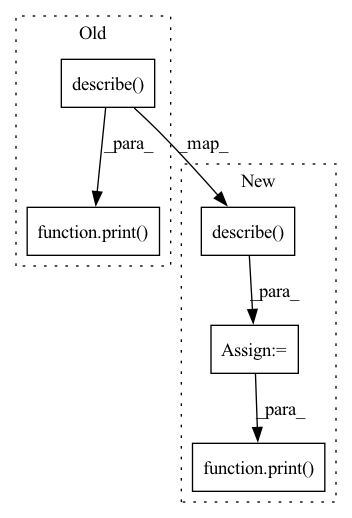

Pattern ID :4613

Before Change
cnt = close_p.groupby("datetime").count()
print(size.describe(percentiles=np.arange(0.1, 0.9, 0.1)))
print(cnt.describe(percentiles=np.arange(0.1, 0.9, 0.1)))
// TODO: assert
def testClose(self):
close_p = D.features(D.instruments("csi300"), ["Ref($close, 1)/$close - 1"])
After Change
size = close_p.groupby("datetime").size()
cnt = close_p.groupby("datetime").count()
size_desc = size.describe(percentiles=np.arange(0.1, 0.9, 0.1))
cnt_desc = cnt.describe(percentiles=np.arange(0.1, 0.9, 0.1))
print(size_desc)
print(cnt_desc)
self.assertLessEqual(size_desc.loc["max"][0], 305, "Excessive number of CSI300 constituent stocks")
self.assertLessEqual(size_desc.loc["80%"][0], 290, "Insufficient number of CSI300 constituent stocks")
In pattern: SUPERPATTERN
Frequency: 3
Non-data size: 5
Instances
Fragment ID: 16598200
Project Name: microsoft/qlib
Commit Name: c825c99c2ceb4b0dd23ad121231d7a8399e6b9de
Time: 2020-09-26
Author: zhu.pengrong@foxmail.com
File Name: tests/dataset_tests/test_dataset.py
M Class Name: TestDataset
N Class Name: TestDataset
M Method Name: testCSI300(1)
N Method Name: testCSI300(1)
M Parent Class: unittest.TestCase
N Parent Class: unittest.TestCase
M File Name: tests/dataset_tests/test_dataset.py
N File Name: tests/dataset_tests/test_dataset.py
M Start Line: 20
M End Line: 21
N Start Line: 19
N End Line: 29
'>
Before Change
def testClose(self):
close_p = D.features(D.instruments("csi300"), ["Ref($close, 1)/$close - 1"])
print(close_p.describe(percentiles=np.arange(0.1, 0.9, 0.1)))
// TODO: assert
if __name__ == "__main__":
After Change
def testClose(self):
close_p = D.features(D.instruments("csi300"), ["Ref($close, 1)/$close - 1"])
close_desc = close_p.describe(percentiles=np.arange(0.1, 0.9, 0.1))
print(close_desc)
self.assertLessEqual(abs(close_desc.loc["80%"][0]), 0.1, "Close value is abnormal")
self.assertLessEqual(abs(close_desc.loc["max"][0]), 0.2, "Close value is abnormal")
self.assertGreaterEqual(abs(close_desc.loc["min"][0]), -0.2, "Close value is abnormal")
'>
Fragment ID: 16598199
Project Name: microsoft/qlib
Commit Name: c825c99c2ceb4b0dd23ad121231d7a8399e6b9de
Time: 2020-09-26
Author: zhu.pengrong@foxmail.com
File Name: tests/dataset_tests/test_dataset.py
M Class Name: TestDataset
N Class Name: TestDataset
M Method Name: testClose(1)
N Method Name: testClose(1)
M Parent Class: unittest.TestCase
N Parent Class: unittest.TestCase
M File Name: tests/dataset_tests/test_dataset.py
N File Name: tests/dataset_tests/test_dataset.py
M Start Line: 26
M End Line: 26
N Start Line: 33
N End Line: 37
'>
Before Change
print("-I- packing:")
print(df_packing.describe())
print("-I- padding:")
print(df_padding.describe())
splits = ["train"]
npacked = df_packing["npacked"].mean()
ntrain = len(df_padding)
After Change
print("-I- packing:")
print(df_packing.describe(percentiles=[0.5, 0.75, 0.9, 0.99]))
print("-I- padding:")
described_padding = df_padding.describe(percentiles=[0.5, 0.75, 0.9, 0.99])
print(described_padding)
splits = ["train"]
npacked = df_packing["npacked"].mean()
ntrain = len(df_padding)
'>
Fragment ID: 16598198
Project Name: saareliad/ftpipe
Commit Name: 8d2929db3b15f8b4f382d66801f6157e432095e8
Time: 2020-09-06
Author: saareliad@campus.technion.ac.il
File Name: data/t5/analyze_t5_packing.py
M Class Name: AnonimousClass
N Class Name: AnonimousClass
M Method Name: sum_task(3)
N Method Name: sum_task(2)
M Parent Class:
N Parent Class:
M File Name: data/t5/analyze_t5_packing.py
N File Name: data/t5/analyze_t5_packing.py
M Start Line: 175
M End Line: 175
N Start Line: 156
N End Line: 198